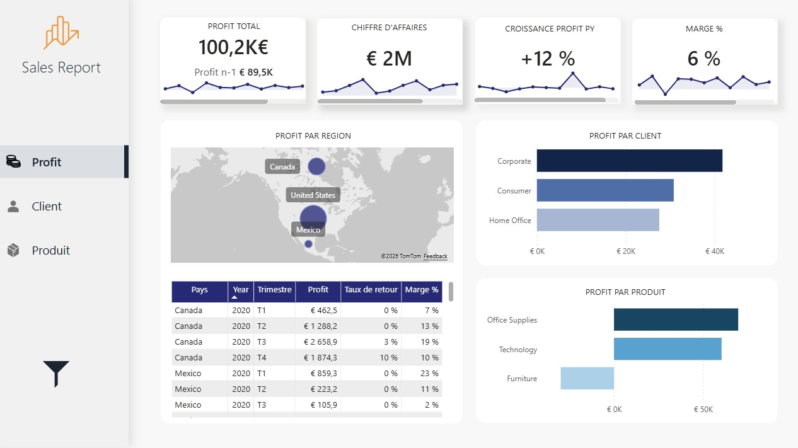

Ikram Ettafki
Data Analyst
À propos
Data analyst avec un background en analyse économique, je m’intéresse avant tout à ce que racontent les données et à la manière dont elles permettent d’éclairer des décisions concrètes.
J’aime comprendre les mécanismes derrière les chiffres, identifier des relations, tester des hypothèses et donner du sens à des données parfois complexes. C’est cette démarche d’analyse et de structuration qui me motive au quotidien.
Au cours de mon parcours, j’ai travaillé sur des problématiques liées à la mobilité et à l’accès à l’emploi, en mobilisant des méthodes statistiques comme la segmentation et la régression.
Mon approche repose sur une base rigoureuse issue de l’économétrie, que j’applique avec un objectif clair : produire des analyses utiles, lisibles et directement exploitables.
Diplômé récemment, je suis aujourd’hui à la recherche d’une première opportunité en data analyse.
N'hésitez pas à parcourir mes projets pour en découvrir davantage 😊
Compétences
Compétences techniques
Outils
Soft Skills
Mes projets

Reporting des ventes et analyse de performance
Une analyse visuelle et interactive des performances clés pour mieux comprendre les dynamiques de l’entreprise.
Voir le projet →Web scraping & analyse
Transformation de données web non structurées en analyses exploitables pour piloter la stratégie commerciale d’une librairie.
Voir le projet →Modélisation & structuration des données
Analyse du marché immobilier français pour fournir des indicateurs clés aux agences et orienter leurs décisions.
Voir le projet →Data pipeline & automatisation
Mise en place d’une solution data automatisée permettant de collecter, structurer et exploiter les données
Disponibilité
Me contacter
Vous souhaitez me contacter : ikramettafki1@gmail.com